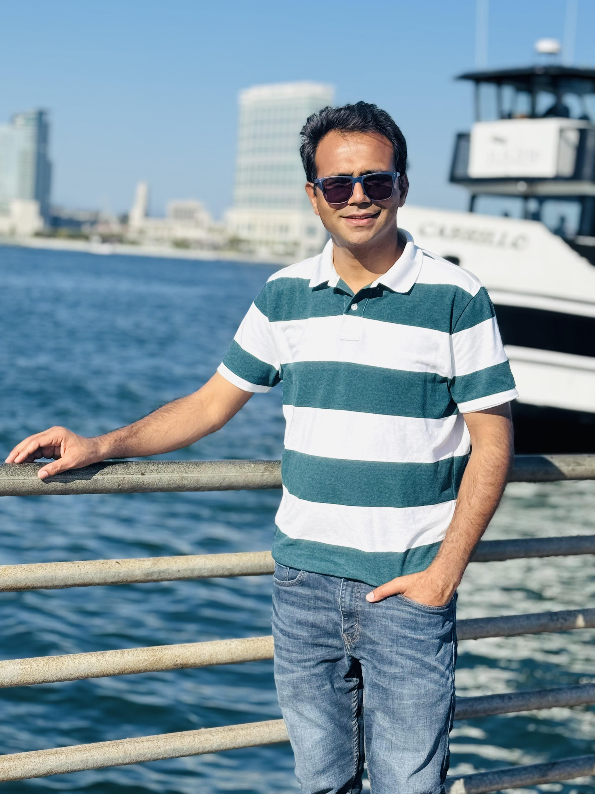

I work at the intersection of aerosols, clouds, climate, and machine learning in the Department of Earth & Environmental Sciences at Vanderbilt University. My current efforts focus on deep-learning–enhanced satellite algorithms for ice-cloud retrievals supporting NASA's PolSIR mission, reconstructing the 21st-century global dust cycle through inverse modeling, and building physics-informed ML frameworks for real-time volcanic cloud detection from geostationary satellites.

Investigating how aerosols govern cloud microphysics, precipitation pathways, and Earth's radiative balance by integrating satellite observations, radiative transfer modeling, and high-resolution cloud-resolving simulations.
Reconstructing the 21st-century dust cycle through multi-sensor observations and inverse modeling; examining how land-use change, soil moisture, and vegetation modulate dust emissions and climate feedbacks.
Quantifying how stratospheric injections of water vapor and SO₂ from explosive eruptions perturb radiative forcing and surface temperatures, including the landmark Hunga Tonga 2022 eruption studies.
Developing deep-learning–enhanced algorithms for ice-cloud microphysical retrievals (NASA PolSIR) and physics-informed, scene-adaptive ML for near-real-time volcanic umbrella cloud detection from geostationary imagery.
Gupta, A. K., J. F. Kok, V. Amiridis, A. Gkikas, K. Rizos, E. Proestakis, S. Logothetis, E. Marinou & C. Pérez García-Pando. Using large-ensemble inverse modeling, we show a global DAOD decline of −10 ± 8 % during 2003–2023, providing the strongest evidence to date that Earth has become less dusty.
Kok, J. F., A. K. Gupta, A. T. Evan, A. A. Adebiyi, S. Albani, Y. Balkanski et al. We constrain the present-day dust longwave DRE to +0.25 ± 0.06 W m⁻²—nearly double the median of current climate models.
Gupta, A. K., T. Mittal, K. Fauria, R. Bennartz & J. Kok. Net radiative cooling of −0.55 ± 0.05 W m⁻² in 2022 from sulfate aerosols, driving a −0.10 K Southern Hemisphere temperature anomaly—contradicting initial warming projections.